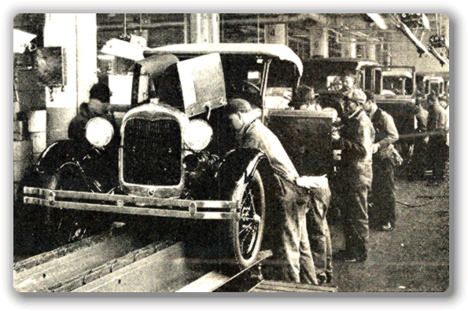
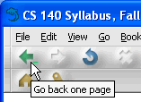
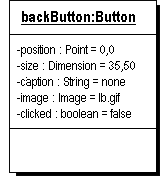
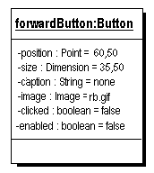
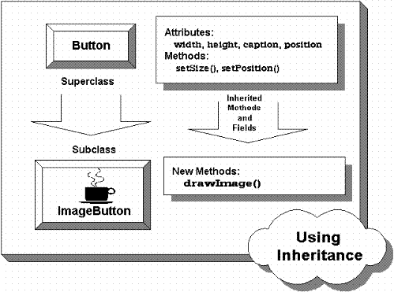
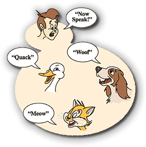
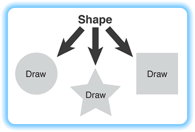

Although you've had some exposure to
objects in the first three chapters, with the Scanner and
String classes, for the most part you've been working
with procedural programming.

Procedural (aka structured) programming is very successful when applied to linear problems like processing the monthly payroll or sending out a set of utility bills. It's easy to see how you can feed a list of employees and their hours into one end of a program and get a pile of paychecks out the other. Organizing this type of program like the Ford Model-T assembly line, shown in the picture above, works very well. But how do you apply the linear model of an assembly line to your
Web browser? Where is the beginning? Where's the end?
 When it comes to interactive software, using a linear
organization, where programs are simply a collection
of procedures that operate on data in a sequential manner,
just doesn't work as well. A better method of organization
is needed, and that's where OOP (Object-Oriented
Programming) comes in.
When it comes to interactive software, using a linear
organization, where programs are simply a collection
of procedures that operate on data in a sequential manner,
just doesn't work as well. A better method of organization
is needed, and that's where OOP (Object-Oriented
Programming) comes in.
In an object-oriented program, the basic "building-block" is not the procedure, but the object. Instead of assembly lines, OOP programs look more like communities. Each object has its own attributes and behavior, and your program "runs" as the objects interact with one another.
Take another look at your Web browser. Do you see the navigation buttons? Those are objects. The scrollbars? Those are objects as well; the main display window is an object, the text area where you type in a URL is an object, the menu at the top of the screen and the resizable frame that encloses the whole thing are objects. In fact, looking at your Web browser, it's hard to find a part of it that isn't an object.
In the rest of this lesson you'll learn a bit more about the basic ideas of object-oriented programming, and you'll be introduced to some important terminology and vocabulary that you should master.
What are Objects?
Objects are the components used to build OOP computer programs; each object represents a part of the system. Looking at your Web browser, you saw that objects can represent visible things such as buttons and scrollbars. But OOP is useful for more than merely creating user interfaces.
In an OOP program, everything of importance to the program is represented by an object. Objects can represent real things, like employees or automobile parts or apartment buildings; but objects can also represent more abstract concepts, such as relationships, times, numbers, or even black holes and transfinite dimensions.
Regardless of what kind of objects you use, you'll want to be able to recognize an object when you meet one. That's easy to do, because all objects have three properties:
- Identity: who the object is
- State: the characteristics of the object
- Behavior: what the object can do
Let's take some time to explore each of these concepts.
Object Identity
Inside your computer program, every object has its own identity. Probably the easiest way to think about identity is to think of it as the object's name. In this respect, objects act a little bit like variables which are available in Java and most other computer languages.
Variables are names we give to data elements that can vary (hence the name), or change as a program runs. You can create a pair of simple numeric variables in Java like this:
int littleInt, bigInt;
The names littleInt and bigInt now represent
different areas of memory where you can store simple integer
values. If you put a value into the integer named littleInt,
it won't affect the variable bigInt at all. The two
variables have different identities.
 Objects are a little more complex than simple numeric variables,
however. The name of an object does not represent a particular
area of memory, as the name of a simple (or primitive) variable
does. Instead, the name of an object refers to, or
points to, a particular area of memory. Thus, the same
object can have several different names.
Objects are a little more complex than simple numeric variables,
however. The name of an object does not represent a particular
area of memory, as the name of a simple (or primitive) variable
does. Instead, the name of an object refers to, or
points to, a particular area of memory. Thus, the same
object can have several different names.
Of course, in real life, you cope with this all the time; your children call you "Dad" or "Mom", your spouse calls you "Honey", and your boss calls you by your given name, all without any confusion as to your real identity. In a similar manner, a single object can have many different names, by creating several object variables that refer to the same object.
Object State
The second property shared by every object is state. The state of an object includes all the information about the object; that is, its attributes or characteristics. In an object-oriented program, each object stores its state in fields or instance variables.

The easiest way to understand state is to look at an example. Take a look at the "Back" button on your Web browser—the button used to return to the last Web page that you've visited.You've already seen that a button is an object; let's see if you can identify some of the fields that a backButton object (just to give it a name), needs in order to do its job.
If you take a piece of paper and start describing the button, you'll find you need attributes such as the following:
- Position: where the button is located on the screen
- Size: the button's width and height
- Caption: any text, such as the word "Back," that the button displays
- Image: any icon or image that is displayed on the button's surface
- Clicked: whether or not the button is currently selected (pressed)

Each of these attributes can be represented as a a field or data item, in thebackButton object, as shown in
the UML (Unified Modeling Language) diagram to the right.
The state of the object is represented by the values
stored in those fields.
For instance, the backButton
object may display an arrow image but no text, and, if you
click on the button with your mouse, its Clicked state
may change from false to true. When you release
the mouse button, the state of the object may change again,
because the value stored in the Clicked field may
change back from true to false.
Note : The UML diagram shown here represents
an object instance. The top part of the diagram contains
the name of the object (backButton), and the class it belongs to,
(Button). These are underlined to indicate that this is an
object, not a class.
The next section shows the object's
fields. Each field starts with a - to indicate that it is
private. The name of the field is followed by its
type. The last part of each field lists its current
value or state. UML diagrams are the common
"schematic" used in object-oriented design, much like
blueprints are used in building.
The attributes (or fields) that an object contains remain unchanged,
but the state of your object changes as the values stored in its
attributes change. Your backButton will always have a
Clicked attribute, but the value stored in the
Clicked field—and your object's state—can vary as your
program runs.
Object Behavior
The third property shared by all objects is behavior. In Java, the behavior of an object is represented by a set of procedures, called methods. Methods contain the instructions that tell a particular object how to perform a task.
If you want a particular object to perform some action, you
invoke or call one of its methods. To accent the
fact that objects represent fairly self-contained, autonomous
units, the process of invoking a method is often called
sending a message to the object. If you were writing a
Web browser program and you wanted to interact with the
backButton object that you previously met, you could ask
it to change its size, for instance, by sending it a message
with the desired size like this:
backButton.setSize(300, 100);
 If the backButton object had a method called
If the backButton object had a method called
setSize(), as shown in the accompanying UML diagram,
it would obediently carry out the instructions
contained in the method at that point.
Unlike an object's fields, which are generally hidden from
outside view by making them private, most methods are
public, readily accessible to other objects. In the
UML diagram, this is illustrated by putting a + in front of
the name. Note also, that the two methods shown here,
setSize() and setPosition() both require
arguments to carry out their actions. As the
diagram shows, setSize() requires two arguments of
type int, while setPosition() requires a
single argument of type Point.
What are Classes?
If object-oriented programs are collections of cooperating objects, then just what are classes? Although often confused, the difference between classes and objects is simple:
A class represents the definition—the blueprint if you like—that is used to construct an object.
Objects are created (or instantiated) when your program runs, by following the definition specified in a particular class. A class defines the characteristics of each individual object, and each class can be used to produce many objects.
The blueprint
shown here, for instance is used to define the characteristics
of a particular automobile. The same blueprint can be used
to produce any number of individual cars:
 In object-oriented programs, classes represent a concept that is
similar to the concept of a user-defined data type in other languages.
In languages like BASIC, Pascal, and C, you can combine individual
related variables into a package, (called a record or a struct),
and then treat that package as in individual unit. A record
might store the information for a customer in a hospital application,
or for a student in a program used to run a school.
In object-oriented programs, classes represent a concept that is
similar to the concept of a user-defined data type in other languages.
In languages like BASIC, Pascal, and C, you can combine individual
related variables into a package, (called a record or a struct),
and then treat that package as in individual unit. A record
might store the information for a customer in a hospital application,
or for a student in a program used to run a school.

Like structures, a class describes the attributes of an object: the kinds of states it can assume. Unlike a structure, though, a class also describes the behaviors of its objects: the kinds of operations that they can perform. If you return to your Web browser again, and this time turn your attention to the "Forward" button, (let's call it forwardButton), you'll immediately notice that is the same "kind" of object as thebackButton object you looked at previously, even
though it contains a different image, and it is disabled. The
two buttons share a common class, even though the enabled
field of forwardButton is false.
As you begin writing Java programs, you'll find that classes are very important. In fact, every Java program you write is a class definition. In your class definitions you describe the attributes that each of your objects possesses, and define the methods that each uses to carry out its actions.
As you write your class definitions, you'll rely on three very important OOP principles: encapsulation, inheritance, and polymorphism.
Encapsulation and Data Hiding
As you've seen, in addition to having its own identity, every object is divided into two parts—the things that it knows how to do, and the data the object contains.
In a procedural program, the procedures that make up the program, and the data that those procedures operate on, are separate. In an object-oriented program, they are combined. This process of wrapping up procedures and data together is called encapsulation.
 Encapsulation is used to enforce the principle of data
hiding. With encapsulation, the fields defined inside a
class are accessible to all the methods defined inside the
same class, but cannot be accessed by methods outside that
class.
Encapsulation is used to enforce the principle of data
hiding. With encapsulation, the fields defined inside a
class are accessible to all the methods defined inside the
same class, but cannot be accessed by methods outside that
class.
Before OOP, if you had two procedures that needed to operate on the same piece of information, you had to either make the data publicly accessible—and risk accidental data corruption as a result of a bug in someone else's code—or you had to pass the data as an argument to each of the functions that operated on it, a tedious and error-prone practice.
With encapsulation, all of the methods in your object can get to the data, but it is still protected from outside access.
Encapsulation in the Real World
When you first start programming, or, if you come from a language that has more liberal rules on data access, like C, you might find encapsulation a fairly strange idea. After all, why make it harder for your programs to access their data?
In fact, out in the real world, all of us are familiar with the
ideas of encapsulation. Let me give you a few examples.

- Today's automobiles are very complex engineering accomplishments;
much more complicated than Henry Ford's original Model-T. Despite
this added complexity, though, driving today's car is similar to,
if not simpler than, driving a Model-T.
That's because, as the cars got more complex, that complexity was hidden behind a simpler interface: the ignition (key), steering wheel, accelerator and brakes. Internal changes, such as the change from carburetors to fuel injections and from gasoline to hybrid don't require drivers to take a new class. That's because those details are encapsulated.
- Your computer is another modern, complex marvel that all of you use every day. Unless you are a hardware tech, though, you never open up the system unit and try to operate it by shorting the pins with a paper-clip. Instead, you use the computer's interface—the mouse, and keyboard— to control the thousands of complex working parts that it contains.
- Finally, think about your TV. Technologically, it's probably at least
as complex as your car or your computer, but you don't need a license
or a degree to operate one. Thanks to the magic of encapsulation,
exemplified by the remote control, every child in the country
can harness that power.
Just as with automobiles, computers and TVs, when it comes to programming, instead of making things more difficult encapsulation will actually make your objects both safer and easier to use.
Inheritance and Code Reuse
Inheritance is another important OOP concept. With inheritance, once you've done all the work of writing and debugging a class definition, you can use that class as the starting point for a new class. Rather than starting over from scratch, your new class can simply add new methods or fields when it needs some new behavior or attribute.
Suppose, for instance, you've just finished writing the first
version of your new super Web browser. It's functional, but
not very exciting. The navigation buttons, for instance, are
just plain Buttons—no images at all. When your boss
sends you a memo asking you to jazz things up with some neat
icons, there's no need for you to start over and write a new
ImageButton class. Instead, you can use the Button
class you've already written, and extend it by using
inheritance.
When you use inheritance to create your ImageButton
class, you don't have to write any methods to change the size
or handle mouse clicks—the Button class you used as a
starting point already knows how to do those things, and your
new ImageButton class simply inherits them. All you have
to do is write the code that adds and displays the image, and
you're done.

When you extend another class, the class you use as a starting point is called the superclass and the new, extended class you create is called the subclass. Although you should endeavor to keep these terms straight, you might prefer to use the terms parent class and child class, which are less apt to lead to confusion.It's obvious that inheritance is useful, because it allows you to reuse code you've already written. What might not be so obvious, however, is that inheritance allows you to organize your programs so that they are more understandable and efficient. You do this by arranging the objects in your programs into inheritance hierarchies.
Take a look at the Button and ImageButton classes
again. These two classes form a simple inheritance hierarchy.
Every ImageButton object is also, by virtue of inheritance,
"a kind of" Button object as well. The ImageButton
class is thus a specialization of the Button class.
Just as a motorcycle or dump truck is a special type of vehicle
with distinctive attributes and behaviors, an ImageButton
is a special type of Button.
You'll learn a lot more about this when we cover inheritance and GUI programming, later in the semester.
Polymorphism

The last of the OOP foundation terms, polymorphism, is a big word that describes a simple idea: two objects can respond to the same message in different ways—according to their nature, so to speak. Thus yourListBox class may have
an add() method that it uses to construct the list that
it displays, while your ComplexNumber class may have
an add() method that it uses to perform arithmetic.
Objects of each sort behave appropriately when sent the
add() message; they never get confused.
This simple idea only hints at the real power of polymorphism, however. Just as inheritance lets you write simpler class definitions by reusing existing classes, polymorphism allows you to use the inheritance relationship to write simpler code. Let's look at an example.
Suppose you are writing a "Space Wars" type arcade game, with
several different kinds of players—FighterShip,
BattleCruiser, SupplyShip, and so on. By
creating a common superclass— SpaceVehicle—and
then using inheritance to create all of the other classes, you
can write one simple method to display all of the players in
all of their glory, instead of writing a bunch of complex
code to display every player. Polymorphism allows you to
simply send the same draw() message to every
SpaceVehicle on the screen, and each actual object
will render itself appropriately.
This is the same idea that is used to make a general-purpose
drawing program, like Visio work. The program is written in terms
of a generic Shape class like this:

The genericShape class doesn't know how to
correctly render itself on the screen. Instead, each of the
specialized shape classes, Star, Square,
and Circle contain their own version of the
draw() method that displays the correct
shape object.

OOP Concepts Summary
- Procedural programs are a collection of procedures that operate on data in a sequential manner, most useful for linear problems.
- OOP—Object-Oriented Programs—are organized as "communities", where each object has its own attributes and behavior, and the program "runs" as the objects interact with one another.
- Objects are programming components that have three attributes: identity, state and behavior.
- Identity is the unique instance of an object in memory, even if that instance is referred to by several object variables.
- The state of an object consists of its attributes or characteristics represented by the values stored in its fields.
- The behavior of an object is implemented by the object's methods.
- A class is a definition or "blueprint" specifying the data attributes and methods for a group of similar objects.
- Objects are instances of a particular class. Objects are instantiated at runtime by following the instructions in a class definition.
- Encapsulation is the OOP design principle and technique
that enforces data hiding. In a properly encapsulated class,
all data elements are
privateand the only access to those elements are through the object's methods. - Inheritance is the OOP design principle that allows you to create a new class by using an existing class as a starting point, and extending it to add new features. Class hierarchies are groups of classes related through inheritance that share data and methods among themselves.
- Polymorphism is the OOP design principle that allows you to write programs in terms of an "ideal" or "generic" class, but substitute or plug-in related objects that act in different ways when your program runs. Polymorphism allows you to write code that is significantly simpler and more flexible.